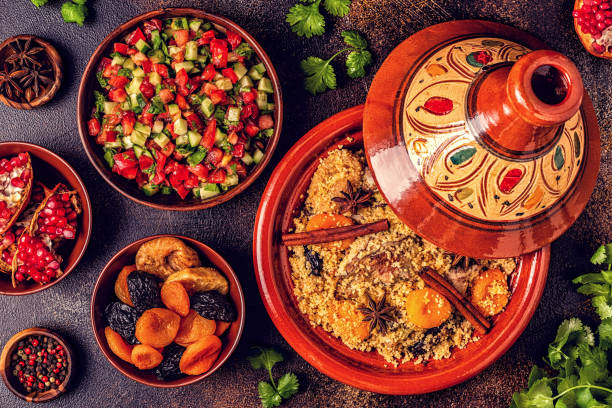

Discover the Flavors of Africa
AfriFoods offers a rich and diverse selection of dishes
inspired by the vibrant cultures of Africa.
About AfriFoods
African cultural foods are rich and diverse, reflecting the continent's varied climates, cultures, and histories. From spicy stews to fresh salads, African cuisine is known for its bold flavors and use of fresh, local ingredients. Common staples include grains like millet, sorghum, and maize, as well as legumes, fruits, and vegetables. Traditional dishes often feature a mix of these ingredients, seasoned with unique spice blends that vary from region to region.
Learn More About Us
